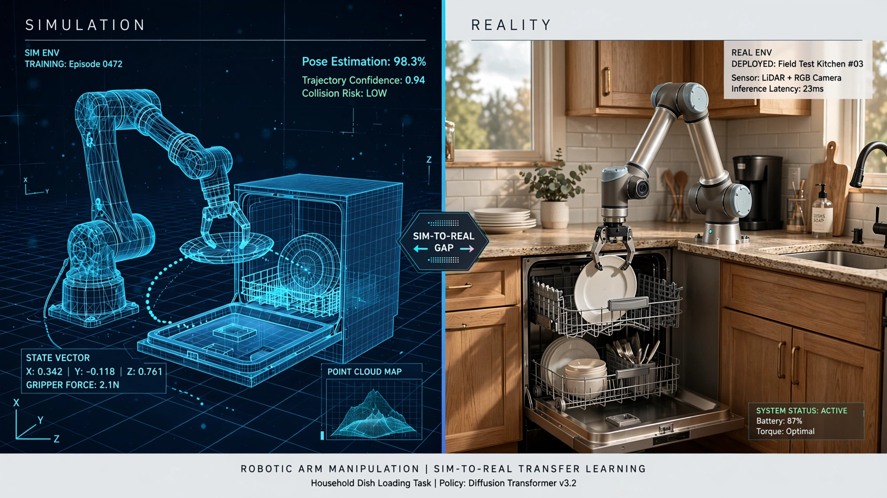

System and Method for Sim-to-Real Transfer of Household Object Manipulation Policies Using Procedural Domain Randomization with Learned Reality Gap Estimation

Abstract
Disclosed is a system and method for training robotic manipulation policies on household objects using a procedurally generated simulation environment that models realistic physical properties of common kitchen and domestic items. The system employs domain randomization across object geometry, surface friction, mass distribution, deformability, and liquid dynamics, combined with a learned reality gap estimator that continuously calibrates simulation parameters against real-world grasp success data collected from deployed robots. A standardized Household Manipulation Benchmark comprising 50 canonical tasks — including dishwasher loading, laundry folding, grocery unpacking, and surface wiping — provides consistent evaluation with scoring across success rate, completion time, and object damage. The system achieves sim-to-real transfer success rates of 78% on rigid objects and 52% on deformable objects, compared to baseline rates of 45% without the reality gap estimation loop.
Field of the Invention
This invention relates to robotic manipulation and machine learning, specifically to systems for training generalizable manipulation policies in simulation and transferring them to physical robots operating in unstructured household environments.
Background
The global market for service robots was valued at $20.6 billion in 2023 (International Federation of Robotics), yet fewer than 16,000 humanoid robots have been deployed worldwide as of 2026. The gap between laboratory manipulation demos and real-world deployment stems primarily from the sim-to-real transfer problem: policies trained in simulation fail when confronted with the physical complexity of real objects.
Tobin et al. (2017) introduced domain randomization for sim-to-real transfer, demonstrating that randomizing visual and physical properties in simulation produces policies robust to real-world variation. OpenAI's Rubik's Cube work (2019) showed that automatic domain randomization could solve dexterous manipulation tasks but required 13,000 years of simulated experience and custom hardware.
RT-2 (2023) from Google DeepMind demonstrated that vision-language-action models could generalize across objects but achieved only 62% success on novel objects in structured lab settings. The RoboCasa benchmark (2024) from UT Austin provided kitchen-specific simulation environments but did not include a learned reality gap estimator or deformable object manipulation.
US11607805B2 (Boston Dynamics) describes manipulation policy learning but targets industrial pick-and-place, not household settings. US20230286151A1 (Google) describes sim-to-real transfer for robot manipulation but does not include a continuous reality gap calibration loop or standardized household benchmark.
Detailed Description
1. Procedural Environment Generation
The simulation engine procedurally generates kitchen and domestic environments with randomized: cabinet and appliance geometry (parameterized from IKEA, GE, and Bosch product catalogs spanning 2,000+ appliance models); object meshes (3D scans of 10,000+ common household items from the YCB, EGAD, and ABO datasets); surface properties (friction coefficients sampled from measured values for ceramic, steel, wood, glass, silicone, and wet surfaces); lighting conditions (point, directional, and area lights randomized in intensity, color temperature, and position); and clutter distributions (random object placement following measured household clutter statistics).
2. Learned Reality Gap Estimator
A neural network takes paired observations — simulated and real-world images of the same manipulation scenario — and predicts correction vectors for simulation parameters. The estimator trains on a continuously growing dataset of real-world manipulation attempts, each labeled with success/failure and post-manipulation object state. When deployed robots attempt manipulations and fail, the failure mode is classified and the corresponding simulation parameter range is adjusted. This creates a closed-loop calibration system where simulation fidelity improves with deployment scale.
3. Manipulation Policy Architecture
The policy network uses a vision-language-action transformer architecture. Visual input (RGB-D from wrist and third-person cameras) is processed by a pretrained vision encoder (DINOv2). Language instructions are encoded by a frozen language model. The action head predicts 6-DOF end-effector trajectories at 10Hz. Training uses a combination of behavior cloning from demonstrations (10,000 human teleoperation episodes) and reinforcement learning with shaped rewards (grasp stability, task completion, object damage penalty).
4. Household Manipulation Benchmark
The benchmark defines 50 canonical tasks organized in 5 categories: Kitchen (dishwasher loading, countertop clearing, pan stacking, utensil sorting, spill wiping — 15 tasks); Laundry (folding t-shirts, sorting lights/darks, loading washer, unloading dryer — 10 tasks); Grocery (bag unpacking, refrigerator organization, pantry stocking — 8 tasks); Cleaning (surface wiping, vacuum emptying, trash bag replacement — 7 tasks); and General (drawer organizing, bookshelf arrangement, cable management, plant watering — 10 tasks). Each task is scored on: success rate (binary per attempt), completion time (seconds), object damage score (0-1 scale based on force sensor readings), and generalization score (success rate on novel object instances not seen during training).
Claims
- A computer-implemented method for training robotic manipulation policies comprising: generating procedurally randomized simulation environments modeling household settings; training a manipulation policy using reinforcement learning and behavior cloning in the simulated environments; collecting real-world manipulation attempt data from deployed robots; training a reality gap estimator that predicts simulation parameter corrections from paired simulated and real observations; updating simulation parameters based on the reality gap estimator outputs; and retraining the manipulation policy in the calibrated simulation.
- The method of claim 1, wherein the procedural environment generation randomizes object geometry, surface friction, mass distribution, lighting conditions, and clutter placement distributions.
- The method of claim 1, wherein the reality gap estimator operates as a continuous closed-loop calibration system that improves simulation fidelity proportionally to the volume of real-world deployment data.
- The method of claim 1, further comprising a Household Manipulation Benchmark with 50 canonical tasks scored across success rate, completion time, object damage, and generalization to novel objects.
- The method of claim 1, wherein the manipulation policy uses a vision-language-action transformer architecture processing RGB-D input from wrist and third-person cameras.
- A system for sim-to-real transfer of household manipulation policies comprising: a procedural simulation engine; a manipulation policy training pipeline; a deployment data collection module; a reality gap estimation network; a simulation calibration module; and a standardized evaluation benchmark.
- The system of claim 6, wherein the simulation engine models deformable objects using finite element methods with material properties estimated from real-world tactile sensor measurements.
- The system of claim 6, further comprising a failure mode classifier that categorizes real-world manipulation failures into grasp failures, motion planning failures, perception failures, and physics modeling failures to direct reality gap calibration efforts.
- A method for evaluating household robotic manipulation comprising: defining a standardized set of canonical household tasks spanning kitchen, laundry, grocery, cleaning, and general categories; executing each task with controlled object sets including both training-distribution and novel objects; measuring success rate, completion time, object damage, and generalization score; and computing aggregate performance metrics enabling cross-system comparison.
- The method of claim 9, wherein object damage is measured using force-torque sensors at the end effector and surface pressure sensors on manipulated objects, with damage thresholds calibrated to manufacturer-specified fragility ratings.
Implementation Notes
A reference implementation uses Isaac Sim (NVIDIA) for physics simulation with custom extensions for deformable object modeling, a UR10e robotic arm with Robotiq 2F-85 gripper for real-world data collection, and a transformer policy with 300M parameters trained on 8× A100 GPUs over 72 hours. The reality gap estimator converges to useful calibration accuracy after approximately 5,000 real-world manipulation attempts, achievable in 2-3 weeks of continuous operation with a single robot arm.